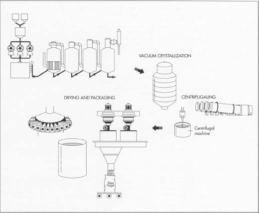

Before the birth of Jesus of Nazareth, sugarcane (from which sugar is made) was harvested on the shores of the Bay of Bengal; it spread to the surrounding territories of Malaysia, Indonesia, Indochina, and southern China. The Arabic people introduced "sugar" (at that point a sticky paste, semi-crystallized and believed to have medicinal value) to the Western world by bringing both the reed and knowledge for its cultivation to Sicily and then Spain in the eighth and ninth centuries. Later, Venice—importing finished sugar from Alexandria—succeeded in establishing a monopoly over this new spice by the fifteenth century; at that point, it started buying raw sugar, and even sugarcane, and treating it in its own refineries. Venice's monopoly, however, was short-lived. In 1498, Portuguese navigator Vasco da Gama returned from India bringing the sweet flavoring to Portugal. Lisbon started to import and refine raw sugar, and, in the sixteenth century, it became the European sugar capital. It was not long before the sweetener was available in France, where its primary function continued to be medicinal, and during the reign of Louis XIV, sugar could be bought by the ounce at the apothecary. By the 1800s, sugar (though still expensive) was widely available to both upper and middle classes.
Sugar is a broad term applied to a large number of carbohydrates present in many plants and characterized by a more or less sweet taste. The primary sugar, glucose, is a product of photosynthesis and occurs in all green plants. In most plants, the sugars occur as a mixture that cannot readily be separated into the components. In the sap of some plants, the sugar mixtures are condensed into syrup. Juices of sugarcane (Saccharum officinarum) and sugar beet (Beta vulgaris) are rich in pure sucrose, although beet sugar is generally much less sweet than cane sugar. These two sugar crops are the main sources of commercial sucrose.
The sugarcane is a thick, tall, perennial grass that flourishes in tropical or subtropical regions. Sugar synthesized in the leaves is used as a source of energy for growth or is sent to the stalks for storage. It is the sweet sap in the stalks that is the source of sugar as we know it. The reed accumulates sugar to about 15 percent of its weight. Sugarcane yields about 2,600,000 tons of sugar per year.
The sugar beet is a beetroot variety with the highest sugar content, for which it is specifically cultivated. While typically white both inside and out, some beet varieties have black or yellow skins. About 3,700,000 tons of sugar are manufactured from sugar beet.
Other sugar crops include sweet sorghum, sugar maple, honey, and corn sugar. The types of sugar used today are white sugar (fully refined sugar), composed of clear, colorless or crystal fragments; or brown sugar, which is less fully refined and contains a greater amount of treacle residue, from which it obtains its color.
Planting and harvesting
-
1 Sugarcane requires an average temperature of 75 degrees Fahrenheit
(23.9 degrees
Celsius) and uniform rainfall of about 80 inches (203 centimeters) per year. Therefore, it is grown in tropical or subtropical areas.In the United States, harvesting of both cane and sugar beet is done primarily by machine, although in some states it is also done by hand. The harvested cane stalks and beets are loaded mechanically into trucks or railroad cars and taken to mills for processing into raw sugar. Once there, they are cleaned, washed, milled to extract juice, filtered, and purified. The result is a clear, sugar-filled juice.
Sugarcane takes about seven months to mature in a tropical area and about 12-22 months in a subtropical area. At this time, fields of sugarcane are tested for sucrose, and the most mature fields are harvested first. In Florida, Hawaii, and Texas, standing cane is fired to burn off the dry leaves. In Louisiana, the six- to ten-feet (1.8- to 3-meter) tall cane stalks are cut down and laid on the ground before burning.
- 2 In the United States, harvesting (of both cane and sugar beet) is done primarily by machine, although in some states it is also done by hand. The harvested cane stalks are loaded mechanically into trucks or railroad cars and taken to mills for processing into raw sugar.
Preparation and processing
-
3 After the cane arrives at the mill yards, it is mechanically unloaded,
and excessive soil and rocks are removed. The cane is cleaned by
flooding the carrier with warm water (in the case of sparse rock and
trash clutter) or by spreading the cane on agitating conveyors that pass
through strong jets of water and combing drums (to remove larger amounts
of rocks, trash, and leaves, etc.). At this point, the cane is clean and
ready to be milled.
When the beets are delivered at the refinery, they are first washed and then cut into strips. Next, they are put into diffusion cells with water at about 175 degrees Fahrenheit (79.4 degrees Celsius) and sprayed with hot water counter currently to remove the sucrose.
 After being purifed, the clear juice undergoes vacuum evaporation to remove most of the water. In this process, four vacuum-boiling cells are arranged in series so that each succeeding cell has a higher vacuum. The vapors from one body can thus boil the juice in the next one, a method calledmultiple-effect evaporation. Next, the syrupy solution is vacuum-crystallized to form sugar crystals. The remaining liquid is removed using centrifugaling and drying, and the sugar is packaged.
After being purifed, the clear juice undergoes vacuum evaporation to remove most of the water. In this process, four vacuum-boiling cells are arranged in series so that each succeeding cell has a higher vacuum. The vapors from one body can thus boil the juice in the next one, a method calledmultiple-effect evaporation. Next, the syrupy solution is vacuum-crystallized to form sugar crystals. The remaining liquid is removed using centrifugaling and drying, and the sugar is packaged.
Juice extraction pressing
- 4 Two or three heavily grooved crusher rollers break the cane and extract a large part of the juice, or swing-hammer type shredders (1,200 RPM) shred the cane without extracting the juice. Revolving knives cutting the stalks into chips are supplementary to the crushers. (In most countries, the shredder precedes the crusher.) A combination of two, or even all three, methods may be used. The pressing process involves crushing the stalks between the heavy and grooved metal rollers to separate the fiber (bagasse)from the juice that contains the sugar.
- 5 As the cane is crushed, hot water (or a combination of hot water and recovered impure juice) is sprayed onto the crushed cane counter currently as it leaves each mill for diluting. The extracted juice, calledvesou,contains 95 percent or more of the sucrose present. The mass is then diffused, a process that involves finely cutting or shredding the stalks. Next, the sugar is separated from the cut stalks by dissolving it in hot water or hot juice.
Purification of juice — clarification and evaporation
-
6 The juice from the mills, a dark green color, is acid and turbid. The
clarification (or
defecation
) process is designed to remove both soluble
and insoluble impurities (such as sand, soil, and ground rock) that
have not been removed by preliminary screening. The process employs
lime and heat as the clarifying agents. Milk of lime (about one pound
per ton of cane) neutralizes the natural acidity of the juice, forming
insoluble lime salts. Heating the lime juice to boiling coagulates the
albumin and some of the fats, waxes, and gums, and the precipitate
formed entraps suspended solids as well as the minute particles.
The sugar beet solution, on the other hand, is purified by precipitating calcium carbonate, calcium sulfite, or both in it repeatedly. Impurities become entangled in the growing crystals of precipitate and are removed by continuous filtration.
- 7 The muds separate from the clear juice through sedimentation. The non-sugar impurities are removed by continuous filtration. The final clarified juice contains about 85 percent water and has the same composition as the raw extracted juice except for the removed impurities.
-
8 To concentrate this clarified juice, about two-thirds of the water is
removed through vacuum evaporation. Generally, four vacuum-boiling cells
or bodies are arranged in series so that each succeeding body has a
higher vacuum (and therefore boils at a lower temperature). The vapors
from one body can thus boil the juice in the next one—the steam
introduced into the first cell does what is called
multiple-effect evaporation.The vapor from the last cell goes to a condenser. The syrup
leaves the last body continuously with about 65 percent solids and 35 percent water.
The sugar beet sucrose solution, at this point, is also nearly colorless, and it likewise undergoes multiple-effect vacuum evaporation. The syrup is seeded, cooled, and put in a centrifuge machine. The finished beet crystals are washed with water and dried.
Crystallization
- 9
Crystallization
is the next step in the manufacture of sugar. Crystallization takes place in a single-stage vacuum
pan.
The syrup is
evaporated
until saturated with sugar. As soon as the saturation point has been exceeded,
small grains of sugar are added to the pan, or "strike." These small grains, called
seed,serve as nuclei for the formation of sugar crystals. (Seed grain is
formed by adding 56 ounces [1,600 grams] of white sugar into the bowl of
a slurry machine and mixing with 3.3 parts of a liquid mixture: 70
percent methylated spirit and 30 percent glycerine. The machine runs at
200 RPM for 15 hours.) Additional syrup is added to the strike and
evaporated so that the original crystals that were formed are allowed to
grow in size.
The growth of the crystals continues until the pan is full. When sucrose concentration reaches the desired level, the dense mixture of syrup and sugar crystals, calledmassecuite, is discharged into large containers known as crystallizers. Crystallization continues in the crystallizers as the massecuite is slowly stirred and cooled.
- 10 Massecuite from the mixers is allowed to flow into centrifugals, where the thick syrup, or molasses, is separated from the raw sugar by centrifugal force.
Centrifugaling
-
11 The high-speed centrifugal action used to separate the massecuite
into raw sugar crystals and molasses is done in revolving machines
called centrifugals. A centrifugal machine has a cylindrical basket
suspended on a spindle, with perforated sides lined with wire cloth,
inside which are metal sheets containing 400 to 600 perforations per
square inch. The basket revolves at speeds from 1,000 to 1,800 RPM. The
raw sugar is retained in the centrifuge basket because the perforated
lining retains the sugar crystals. The mother liquor, or molasses,
passes through the lining (due to the centrifugal force exerted). The
final molasses(blackstrap molasses)containing sucrose,
reducing sugars, organic nonsugars, ash, and water,
is sent to large storage tanks.
Once the sugar is centrifuged, it is "cut down" and sent to a granulator for drying. In some countries, sugarcane is processed in small factories without the use of centrifuges, and a dark-brown product (noncentrifugal sugar) is produced. Centrifugal sugar is produced in more than 60 countries while noncentrifugal sugar in about twenty countries.
Drying and packaging
- 12 Damp sugar crystals are dried by being tumbled through heated air in a granulator. The dry sugar crystals are then sorted by size through vibrating screens and placed into storage bins. Sugar is then sent to be packed in the familiar packaging we see in grocery stores, in bulk packaging, or in liquid form for industrial use.
The bagasse produced after extracting the juice from sugar cane is used as fuel to generate steam in factories. Increasingly large amounts of bagasse are being made into paper, insulating board, and hardboard, as well as furfural, a chemical intermediate for the synthesis of furan and tetrahydrofuran.
The beet tops and extracted slices as well the molasses are used as feed for cattle. It has been shown that more feed for cattle and other such animals can be produced per acre-year from beets than from any other crop widely grown in the United States. The beet strips are also treated chemically to facilitate the extraction of commercial pectin.
The end product derived from sugar refining is blackstrap molasses. It is used in cattle feed as well as in the production of industrial alcohol, yeast, organic chemicals, and rum.
Mill sanitation is an important factor in quality control measures. Bacteriologists have shown that a small amount of sour bagasse can infect the whole stream of warm juice flowing over it. Modern mills have self-cleaning troughs with a slope designed in such a way that bagasse does not hold up but flows out with the juice stream. Strict measures are taken for insect and pest controls.
Because cane spoils relatively quickly, great steps have been taken to automate the methods of transportation and get the cane to the mills as quickly as possible. Maintaining the high quality of the end-product means storing brown and yellow refined sugars (which contain two percent to five percent moisture) in a cool and relatively moist atmosphere, so that they continue to retain their moisture and do not become hard.
Most granulated sugars comply with standards established by the National Food Processors Association and the pharmaceutical industry (U.S. Pharmacopeia, National Formulary).
Books
Clarke, M. A., ed.Chemistry & Processing of Sugarbeet & Sugarcane.Elsevier Science Publishing Co., Inc., 1988.
Hugot, E.Handbook of Cane Sugar Engineering. 3rd ed. Elsevier Science Publishing Co., Inc., 1986.
Lapedes, Daniel, ed.McGraw Hill Encyclopedia of Food, Agriculture and Nutrition. McGraw Hill, 1977.
McGee, Harold.On Food and Cooking: The Science and Lore of the Kitchen.Collier Books, 1984.
Meade, G. P.Cane Sugar Handbook: A Manual for Cane Sugar Manufacturers and Their Chemists. John Wiley and Sons, 1977.
Pennington, Neil L. and Charles Baker, eds.Sugar: A Users' Guide to Sucrose. Van Nostrand Reinhold, 1991.
Rost, Waverly.Food.Simon & Schuster, 1980.
Periodicals
"Sugar: Can We Make It On the Homestead?"Countryside & Small Stock Journal. May-June, 1987, p. 9.
Hayes, Joanne L. "Sugarloaf Lore,"Country Living.March, 1989, p. 132.
"Squeezing All the Sweetness Out of Sugarcane—and More,"Chemical & Engineering News.May 12, 1986, pp. 38-9.